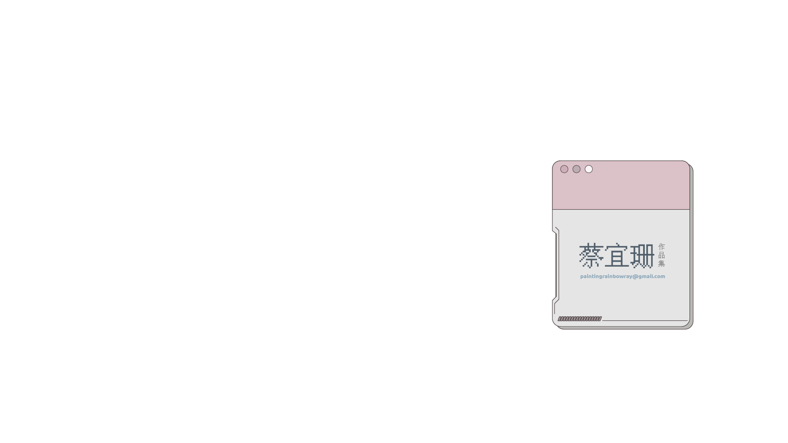
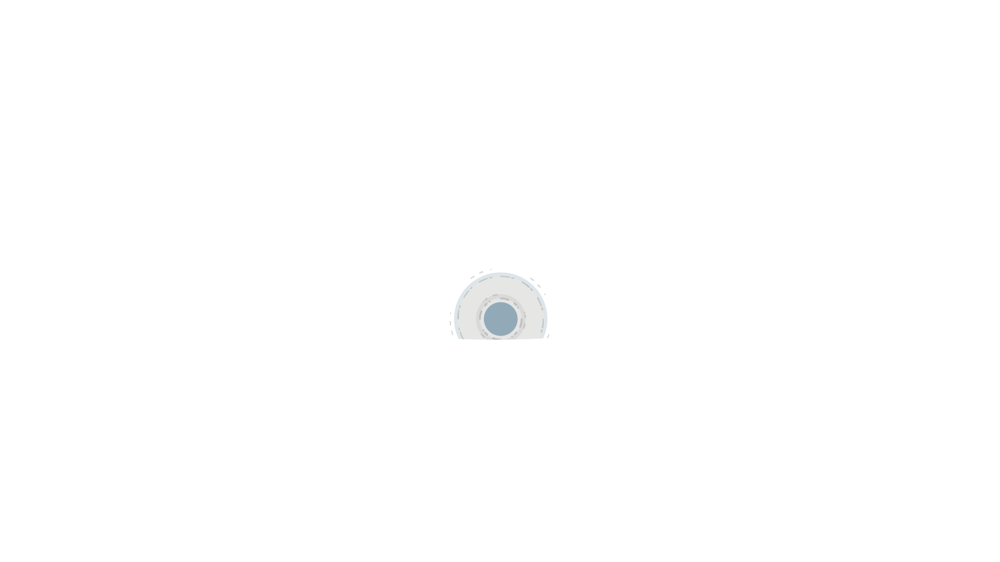
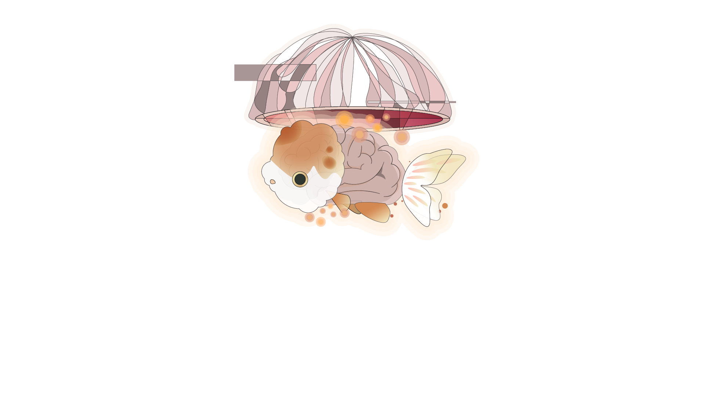
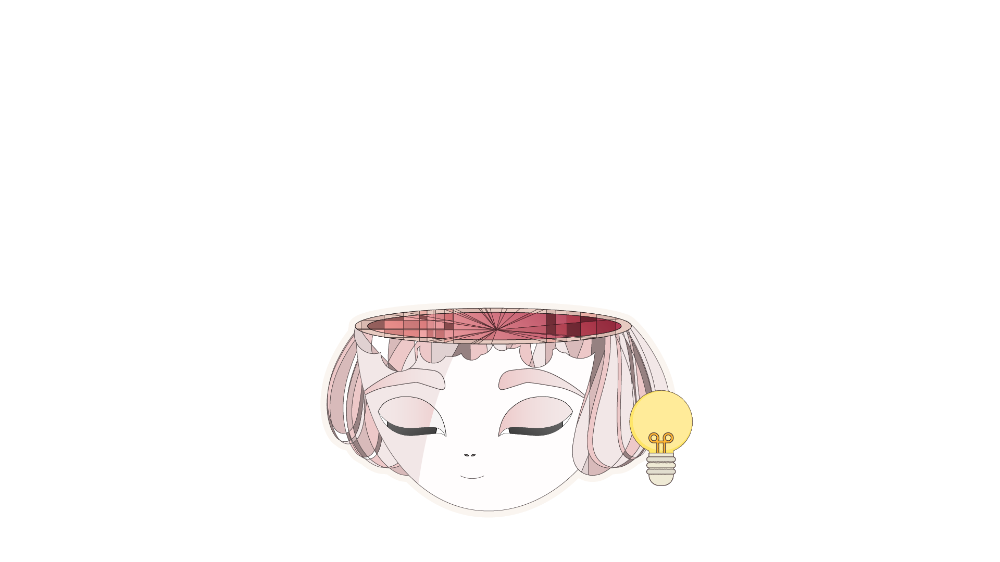
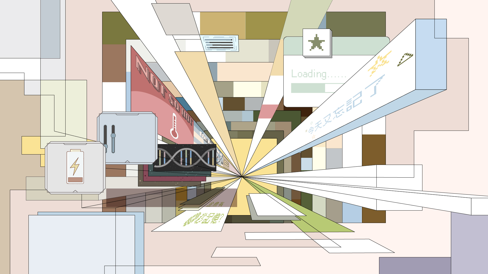
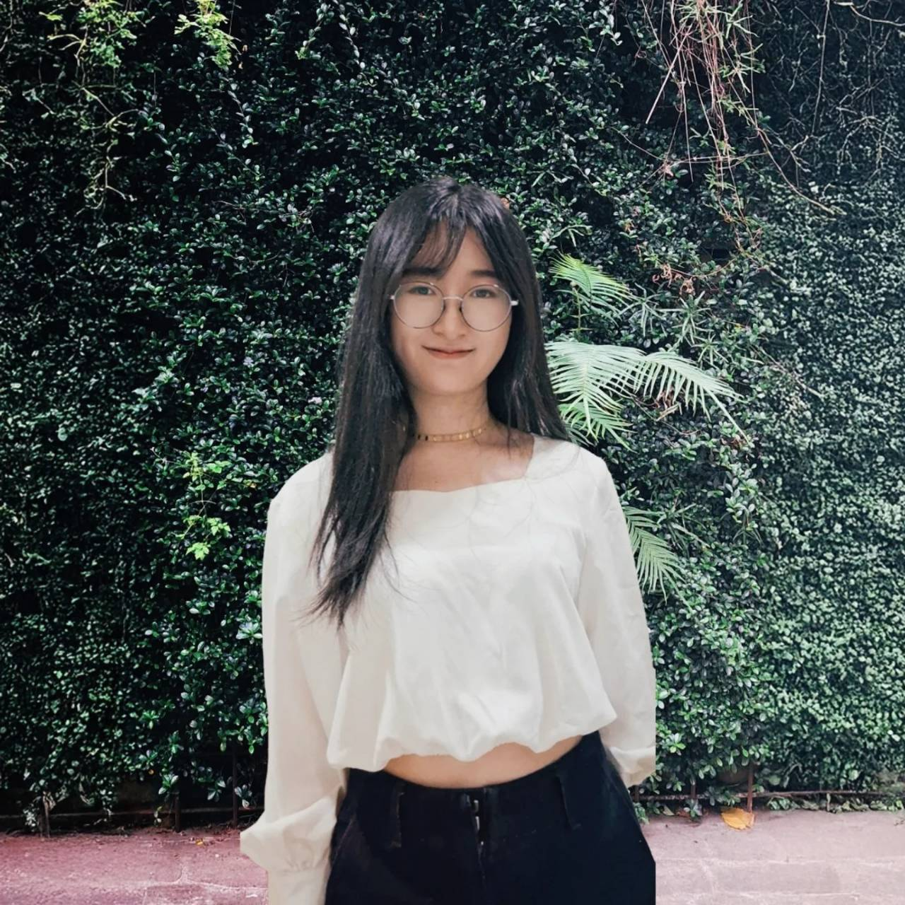

01 / Profile

學歷
2020–2023 國立臺灣藝術大學 多媒體動畫藝術學系（新媒體藝術碩士班），臺北
2016–2020 國立臺北藝術大學 美術學系（版畫組），臺北
獲獎經歷
2023 創意梗圖競賽「彰化就業好所在」組第三名
2023 黑白繪畫大賽2023 電繪組 G組—公開組(年齡不限) 金獎
02 / Work
03 / Freelance
專案實例

04 / Exhibitions
展演經歷
2023 《Render Soul》，錄像，「宇宙‧無極—科技藝術特展」，臺中市屯區藝文中心，臺中
2022 《白盒子》，錄像，圓宇宙－沉浸式圓頂投影體驗展，府中15，新北
2022 《「New World」AR》、《welcome to a new world》，AR、錄像，部署之所，臺灣藝術大學 美術系館，新北
2021 《EPIDEMIC &》，錄像，線上展演
2021 《獸》，錄像，國立臺灣藝術大學多媒體動畫藝術學系第十七屆系展【開動】，台藝大教學研究大樓，新北
2020 《白盒子》，「Dome頂之夜」，空總臺灣當代文化實驗場 戰情大樓前廣場，臺北
2020 「第二層皮膚」個展，南北畫廊，臺北
2020 《幕前》《幕後》系列，「台北國際當代一年展」聯展，地下美術館，臺北
2019 《你在看我嗎?》，「找不到替代文字」系展，地下美術館，臺北
2019 《如何製作出好吃的緊急糧食》，「西北雨Saipakhoo」聯展，臺北當代文化實驗場，臺北
2019 《可以看我一下嗎？美術館給你的情書》，聯展，關美館，臺北